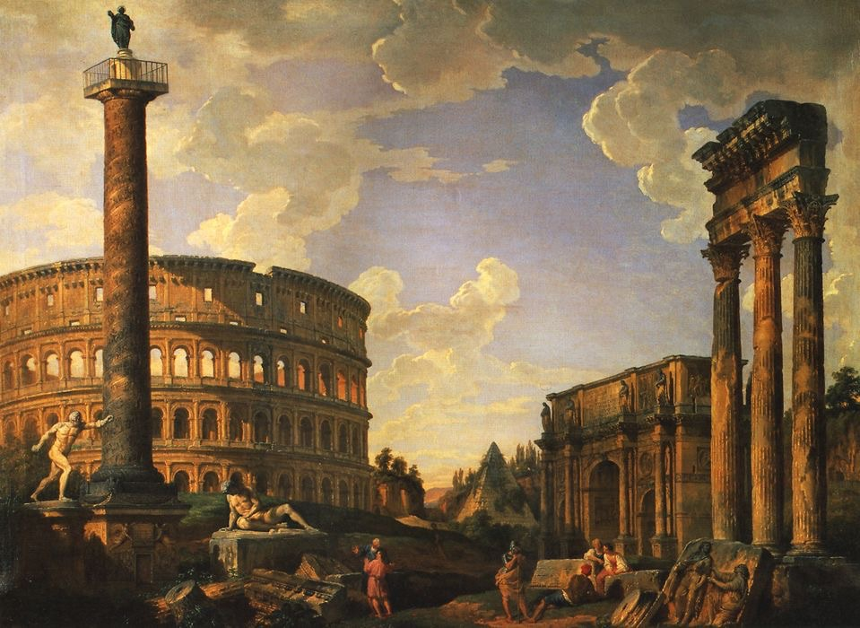
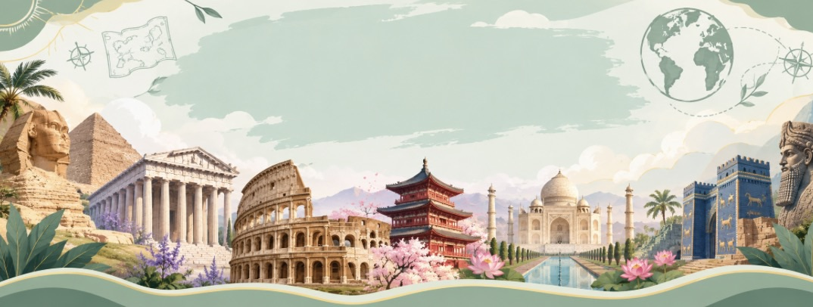

อารยธรรมโรมัน

ความเป็นมา
โรมันเริ่มต้นจากเมืองโรมบนคาบสมุทรอิตาลี ต่อมาได้ขยายอำนาจออกไปเป็นอาณาจักรขนาดใหญ่
มรดกของโรมัน
โรมันมีผลงานด้านกฎหมาย วิศวกรรม สถาปัตยกรรม และการสร้างถนน ตัวอย่างที่มีชื่อเสียงคือโคลอสเซียม และระบบถนนของโรมัน


โรมันเริ่มต้นจากเมืองโรมบนคาบสมุทรอิตาลี ต่อมาได้ขยายอำนาจออกไปเป็นอาณาจักรขนาดใหญ่
โรมันมีผลงานด้านกฎหมาย วิศวกรรม สถาปัตยกรรม และการสร้างถนน ตัวอย่างที่มีชื่อเสียงคือโคลอสเซียม และระบบถนนของโรมัน